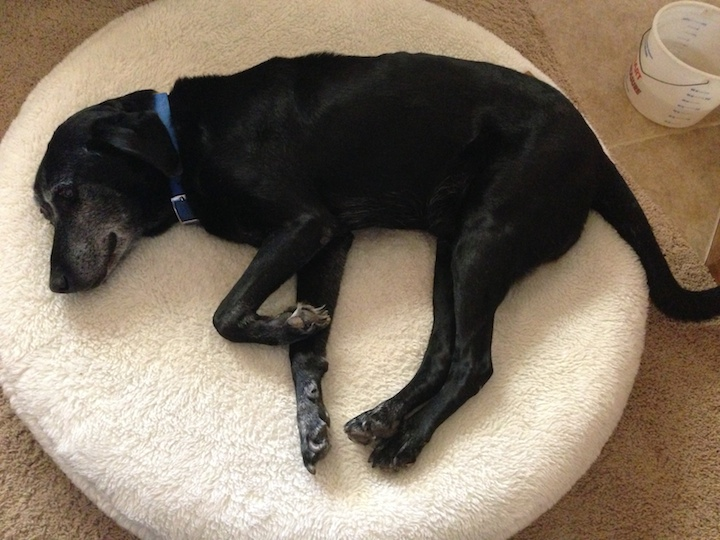

I am working on a new version of twodogbrew.com. As I have time I will update the site and get it back online.
12.28.2013
Today we had to say goodbye to Buck. It’s hard to say how many of you reading this got to meet and interact with Buck, but I guarantee that if you did, he loved you from the moment he saw you. He made it a long way at fourteen and a half years old and in those years we grew to love and cherish him. Even with a tumor on his face, a wobbly back end, and losing weight, he still made every effort he could to be near those he loved. We will not soon forget the wonderful memories we made with you Buck. Wherever you are, you are not struggling anymore. While we are sad Buck is no longer with us, we still laugh and find joy in the memories we made with him. We hope that for those of you who knew him, that you would do the same. You will be always loved, missed, and in our hearts Buck. I hope to brew a black IPA in Buck's memory sometime in 2014.

10.03.2011
On Monday, we had to say goodbye to Daisy, one of the dogs of Two Dog Brew. She was part of our family for twelve years, five of which she served as the mascot for our brewery. She spent Monday with some of her favorite past times, roaming the backyard and being loved on by her family. We love you little Daisy girl and you will be missed very much. Look forward to a Irish red ale in honor of Daisy in late 2011 or early 2012.